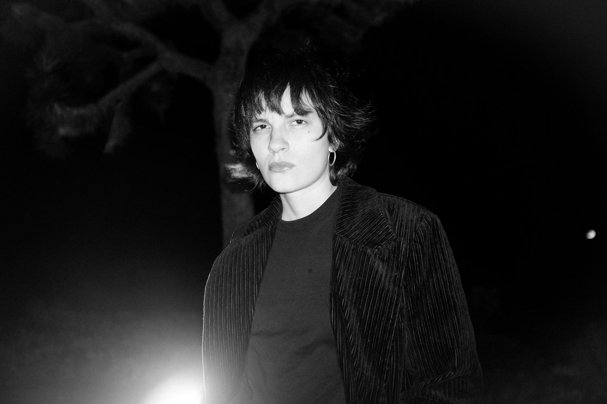

KUCZYNSKI
Synth-pop pra quem prefere a pista escura.
a artista
KUCZYNSKI
KUCZYNSKI é o projeto autoral da produtora musical brasileira Vivian Kuczynski, hoje baseada em Los Angeles. Antes de se lançar como artista, Vivian consolidou uma carreira relevante nos bastidores da música brasileira, com trabalhos ao lado de Pabllo Vittar, Jão, Alice Caymmi, Carol Biazin e NX Zero.
Aos 23 anos, ela constrói sua trajetória internacional com um projeto que reflete integralmente sua visão estética e sonora: referências retrô com uma abordagem contemporânea, entre o pop e a música eletrônica alternativa, guiada por bases rítmicas pulsantes com influências de post-punk.
Tudo no projeto é escrito, produzido, mixado e masterizado por ela mesma.
música
O novo single
O single mais recente de KUCZYNSKI, no Spotify.
o som
Frio, eletrônico, retrô-contemporâneo
O som de KUCZYNSKI mistura synth-pop e dance alternativo com base rítmica pulsante e influências de post-punk.
Synth-pop
Melodia de sintetizador com referência retrô e acabamento de hoje.
Dance alternativo
Música de pista que anda pelos limites entre o pop e a eletrônica alternativa.
Pulso de post-punk
Bases rítmicas pulsantes, num universo frio e eletrônico.
Feito por ela
Escrita, produção, mix e masterização assinadas pela própria Vivian.
referências de som
Pra quem escuta
- Molchat Doma
- She Past Away
- Drab Majesty
- La Femme
- Boy Harsher
management
Johayna El Mouallem
mouallem management